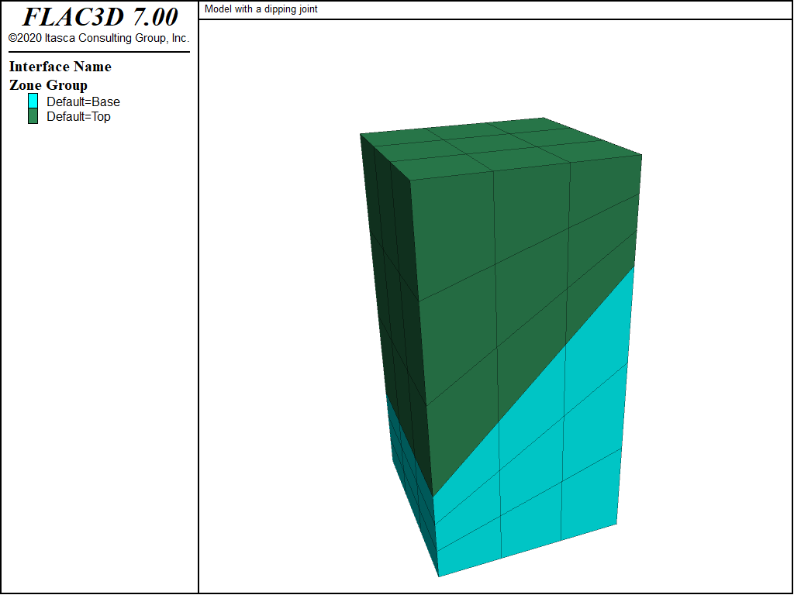
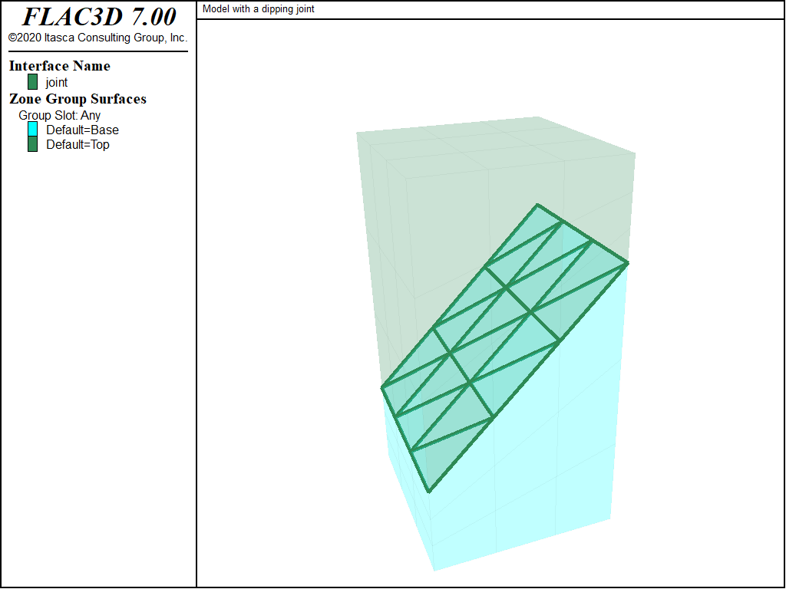

接触面几何的创建
使用 zone interface create 命令创建接触面。对于需要模型中两个独立网格之间接触面的情况，应使用 单元界面创建按面（zone interface create by-face） 命令将接触面附着到其中一个网格表面。该命令会为所有中心点落在指定范围内的表面网格单元面生成接触面 s 的接触面单元。要创建接触面的任何表面都必须先生成；必须能够指定一个已存在的表面以创建接触面单元。除非给出 单元界面创建按面（zone interface create by-face） 命令和 separate 关键字，否则两个相邻表面之间必须指定间隙。在这种情况下，分离的子网格可以在空间中同一位置具有表面网格点。
默认情况下，每个网格单元面创建两个接触面单元。使用 zone interface s element maximum-edge v 命令可以增加接触面单元的数量。[1] 这会使所有边长大于 v 的接触面单元细分为更小的单元，直到其边长小于 v。该命令可用于提高模型中的分辨率，并减小跨接触面网格单元尺寸差异很大的部位中的力拱效应。
在 FLAC3D 中使用接触面单元时应遵循以下若干规则：
- 如果较小的表面积与较大的表面积接触（例如小块体搁置在大块体上），则接触面应附着到较小的区域。
- 如果两个相邻网格之间的网格单元密度不同，则接触面应附着到网格单元密度较大（即同一面积内网格单元数较多）的网格上。
- 接触面单元的尺寸应始终等于或小于与其接触的目标面。如果不是这样，则应将接触面单元细分为更小的单元。
- 接触面单元应仅限于那些实际会与另一网格发生接触的网格表面。
“DippingJoint.dat” 中给出了一个说明接触面创建过程的简单示例。相应的项目文件 “DippingJoint.f3prj” 位于文件夹 “datafiles\Interface\DippingJoint” 中。该示例是一个含单条倾角 45° 节理的块体试样。
DippingJoint.dat
model new
model title "Model with a dipping joint"
fish automatic-create off
zone create brick size 3 3 3 ...
point 0 (0,0,0) point 1 (3,0,0) point 2 (0,3,0) ...
point 3 (0,0,1.5) point 4 (3,3,0) point 5 (0,3,1.5) ...
point 6 (3,0,4.5) point 7 (3,3,4.5) ...
group 'Base'
zone create brick size 3 3 3 ...
point 0 (0,0,1.5) point 1 (3,0,4.5) point 2 (0,3,1.5) ...
point 3 (0,0,6) point 4 (3,3,4.5) point 5 (0,3,6) ...
point 6 (3,0,6) point 7 (3,3,6) ...
group 'Top'
model save 'int0'
; 在底座顶面上创建界面单元
zone interface 'joint' create by-face separate range group 'Top' group 'Base'
model save 'int1'
图 1（Figure 1） 显示了创建接触面之前的网格。定义了两个子网格分组：Base 网格和 Top 网格。图 2（Figure 2） 显示了将接触面单元附着到 Base 网格后的模型。
使用该模型的单轴压缩试验将在后面的 所有性质都具有物理意义（All Properties Have Physical Significance） 中描述。


图 1：创建接触面之前的初始几何。


图 2：最终几何。
尾注
| [1] | 请注意，如果调用了 配置流体计算模式（model configure fluid），且某个接触面的 permeability 为 开启（on），则为该接触面指定 maximum-edge 会自动使其变为不透水。如果希望流体穿过接触面流动，则不要指定 maximum-edge。 |
| 这些内容对您有帮助吗？… | FLAC3D © 2019, Itasca | 原文更新于 2020 年 10 月 8 日 |
| 版权与免责声明 | ||